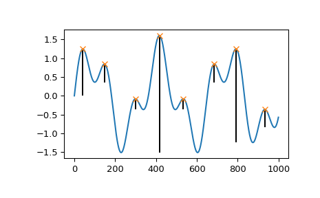
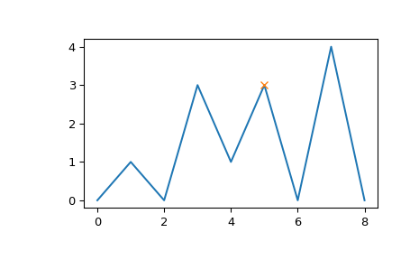

scipy.signal.peak_prominences¶
-
scipy.signal.peak_prominences(x, peaks, wlen=None)[source]¶ Calculate the prominence of each peak in a signal.
The prominence of a peak measures how much a peak stands out from the surrounding baseline of the signal and is defined as the vertical distance between the peak and its lowest contour line.
- Parameters
- xsequence
A signal with peaks.
- peakssequence
Indices of peaks in x.
- wlenint, optional
A window length in samples that optionally limits the evaluated area for each peak to a subset of x. The peak is always placed in the middle of the window therefore the given length is rounded up to the next odd integer. This parameter can speed up the calculation (see Notes).
- Returns
- prominencesndarray
The calculated prominences for each peak in peaks.
- left_bases, right_basesndarray
The peaks’ bases as indices in x to the left and right of each peak. The higher base of each pair is a peak’s lowest contour line.
- Raises
- ValueError
If a value in peaks is an invalid index for x.
- Warns
- PeakPropertyWarning
For indices in peaks that don’t point to valid local maxima in x, the returned prominence will be 0 and this warning is raised. This also happens if wlen is smaller than the plateau size of a peak.
Warning
This function may return unexpected results for data containing NaNs. To avoid this, NaNs should either be removed or replaced.
See also
find_peaksFind peaks inside a signal based on peak properties.
peak_widthsCalculate the width of peaks.
Notes
Strategy to compute a peak’s prominence:
Extend a horizontal line from the current peak to the left and right until the line either reaches the window border (see wlen) or intersects the signal again at the slope of a higher peak. An intersection with a peak of the same height is ignored.
On each side find the minimal signal value within the interval defined above. These points are the peak’s bases.
The higher one of the two bases marks the peak’s lowest contour line. The prominence can then be calculated as the vertical difference between the peaks height itself and its lowest contour line.
Searching for the peak’s bases can be slow for large x with periodic behavior because large chunks or even the full signal need to be evaluated for the first algorithmic step. This evaluation area can be limited with the parameter wlen which restricts the algorithm to a window around the current peak and can shorten the calculation time if the window length is short in relation to x. However, this may stop the algorithm from finding the true global contour line if the peak’s true bases are outside this window. Instead, a higher contour line is found within the restricted window leading to a smaller calculated prominence. In practice, this is only relevant for the highest set of peaks in x. This behavior may even be used intentionally to calculate “local” prominences.
New in version 1.1.0.
References
- 1
Wikipedia Article for Topographic Prominence: https://en.wikipedia.org/wiki/Topographic_prominence
Examples
>>> from scipy.signal import find_peaks, peak_prominences >>> import matplotlib.pyplot as plt
Create a test signal with two overlayed harmonics
>>> x = np.linspace(0, 6 * np.pi, 1000) >>> x = np.sin(x) + 0.6 * np.sin(2.6 * x)
Find all peaks and calculate prominences
>>> peaks, _ = find_peaks(x) >>> prominences = peak_prominences(x, peaks)[0] >>> prominences array([1.24159486, 0.47840168, 0.28470524, 3.10716793, 0.284603 , 0.47822491, 2.48340261, 0.47822491])
Calculate the height of each peak’s contour line and plot the results
>>> contour_heights = x[peaks] - prominences >>> plt.plot(x) >>> plt.plot(peaks, x[peaks], "x") >>> plt.vlines(x=peaks, ymin=contour_heights, ymax=x[peaks]) >>> plt.show()
Let’s evaluate a second example that demonstrates several edge cases for one peak at index 5.
>>> x = np.array([0, 1, 0, 3, 1, 3, 0, 4, 0]) >>> peaks = np.array([5]) >>> plt.plot(x) >>> plt.plot(peaks, x[peaks], "x") >>> plt.show()
>>> peak_prominences(x, peaks) # -> (prominences, left_bases, right_bases) (array([3.]), array([2]), array([6]))
Note how the peak at index 3 of the same height is not considered as a border while searching for the left base. Instead, two minima at 0 and 2 are found in which case the one closer to the evaluated peak is always chosen. On the right side, however, the base must be placed at 6 because the higher peak represents the right border to the evaluated area.
>>> peak_prominences(x, peaks, wlen=3.1) (array([2.]), array([4]), array([6]))
Here, we restricted the algorithm to a window from 3 to 7 (the length is 5 samples because wlen was rounded up to the next odd integer). Thus, the only two candidates in the evaluated area are the two neighboring samples and a smaller prominence is calculated.